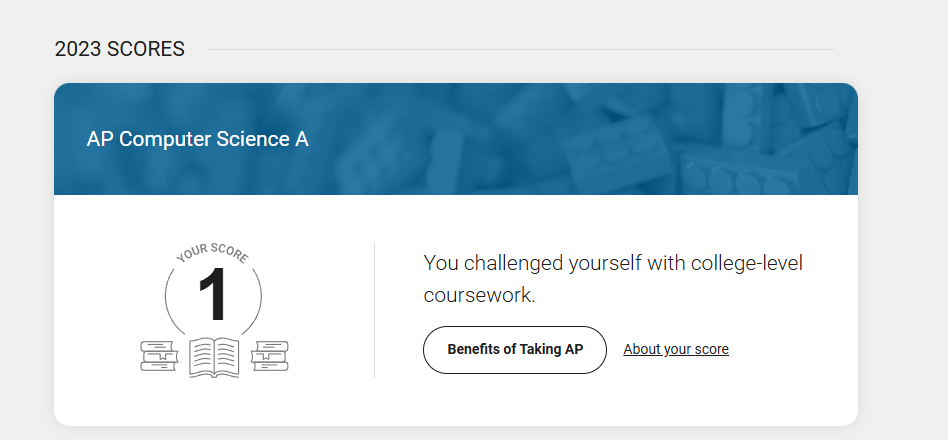

I grew up in two completely different worlds. My first world was in Nepalgunj, right by the Nepal-India border. It was me, Buwa (grandpa), Aama (grandma), and my Mama (Uncle), Maiju (Aunt). My parents resided in the US, so I only saw my mom once a year, and I don't think I have any memories of my dad until I came to the US. 6 visa rejections later, I finally came to the US at 7. From there, I was constantly moving around until I moved to Charlotte for High School, where I stayed for 4 years. Then I moved again, to Boston, for college. Moving around constantly has been a defining feature of my life, and I've been able to meet so many different people and experience so many different cultures because of it. I think it's made me adaptable and open-minded, and given me a strong desire to keep exploring and experiencing new things.
I got a 1 on my AP Computer Science A exam. I thought I made a massive mistake picking Computer Science as my major.
Two years later, I was a TA running labs and helping students who were taking their first programming class at Northeastern.

I came to Northeastern because I loved the thought of being in a city and having the opportunity to co-op at different companies throughout college. I wasn't sure where the road would take me, but I knew I wanted to be in an environment where I could explore different things and figure out what I was passionate about. Turns out the road and journey still isn't fully finished yet, and probably won't be for a long time. Sometimes I ask think to myself that maybe the point isn't even to figure it out, but to just keep exploring and learning.
In between, I co-founded Apulza — a personal growth engine — because I kept noticing that the gap between who people want to be and who they are day-to-day is mostly a design problem. That felt worth solving.
Outside of work, I shoot photography, follow aviation closely, and spend time thinking about the kind of person I want to become. The movement across cities never really stopped — 11 cities, 2 countries, and counting.